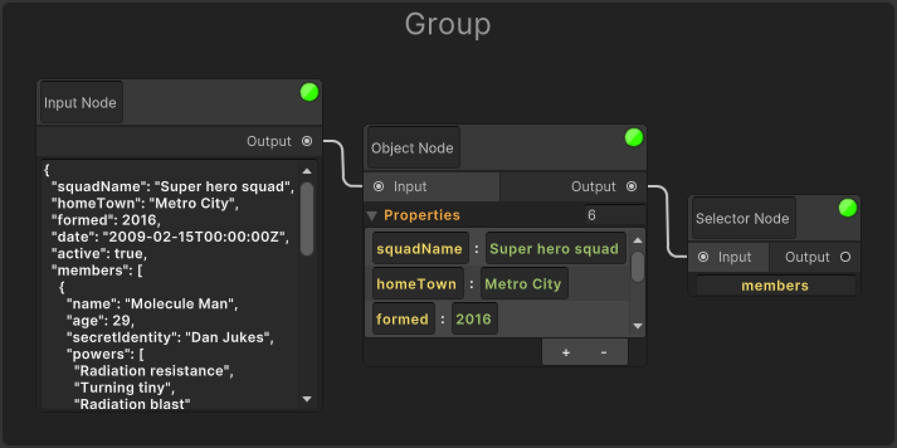

Group
The Group element helps you to easily drag and categorize certain nodes under a single group.
If you want to create it, you can click on group from the Search Window and create it.
Or you can select the nodes you want to group and right click and use the group action from the Contextual Menu to group them under a group.
They simply have one elements in common.
🆔 Title
It exists to distinguish and name groups from each other.
The data of this element is also reflected on the saved scriptable object.
Manually Grouping Nodes
After creating the Group element, drag and drop the nodes to the empty area within the group with Left Click and they will be included in the group element.
Manually Removing Nodes from the Group
After selecting the node within the group element, you can drag and drop the nodes from the group with the Shift + Left Click combination.